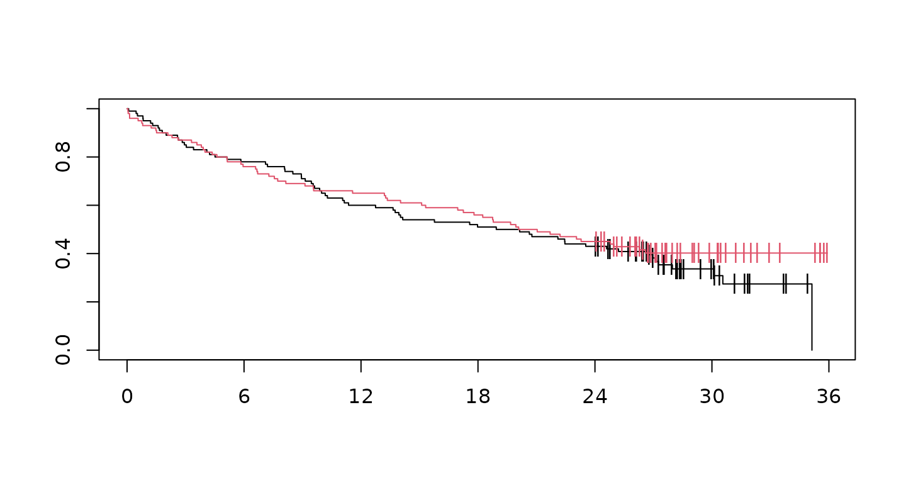
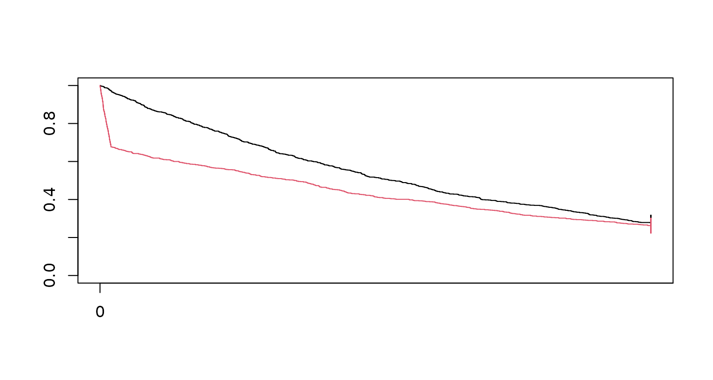

Using the Magirr-Burman weights for testing
Source:vignettes/modestWLRTVignette.Rmd
modestWLRTVignette.RmdIntroduction
Magirr and Burman (2019) implemented a modestly weighted logrank test with the following claim:
Tests from this new class can be constructed to have high power under a delayed-onset treatment effect scenario, as well as being almost as efficient as the standard logrank test under proportional hazards.
They have implemented this in the package modestWLRT. Since the implementation is relatively straightforward, we have added this functionality to the simtrial package and explain how to use it here with the wMB() function.
We consider two examples:
- A single stratum example where we compare results with the
modestWLRTpackage. - A stratified example which was not implemented in
modestWLRT.
Packages used are as follows:
Single stratum examples
Magirr and Burman delayed effect example
First, we specify study duration, sample size and enrollment rates. The enrollment rate is assumed constant during the enrollment period until the targeted sample size is reached. For failure rates, we consider the delayed treatment effect example of Magirr and Burman (2019). The control group has an exponential failure rate with a median of 15 months. For the initial 6 months, the underlying hazard ratio is one followed by a hazard ratio of 0.7 thereafter. This differs from the Magirr and Burman (2019) delayed effect assumptions only in that they assume a hazard ratio of 0.5 after 6 months.
studyDuration <- 36
sampleSize <- 200
enrollRates <- tibble::tibble(duration = 12, rate = 200 / 12)
failRates <- tibble::tribble(
~Stratum, ~duration, ~failRate, ~hr, ~dropoutRate,
"All", 6, log(2) / 15, 1, 0,
"All", 36, log(2) / 15, .7, 0
)Now we generate a single dataset with the above characteristics and cut data for analysis at 36 months post start of enrollment. Then we plot Kaplan-Meier curves for the resulting dataset (red curve for experimental treatment, black for control):
set.seed(7783)
xpar <- simfix2simPWSurv(failRates)
MBdelay <- simPWSurv(
n = sampleSize,
strata = tibble::tibble(Stratum = "All", p = 1),
block = c(rep("Control", 2), rep("Experimental", 2)),
enrollRates = enrollRates,
failRates = xpar$failRates,
dropoutRates = xpar$dropoutRates
) %>%
cutData(studyDuration)
fit <- survfit(Surv(tte, event) ~ Treatment, data = MBdelay)
plot(fit, col = 1:2, mark = "|", xaxt = "n")
axis(1, xaxp = c(0, 36, 6))
We perform a logrank and weighted logrank tests as follows:
xx <- MBdelay %>%
tensurv(txval = "Experimental") %>%
tenFHcorr(rg = tibble(rho = c(0, 0, 1), gamma = c(0, 1, 1))) %>%
mutate(p = pnorm(Z))
xx
#> rho gamma Z V1 V2 V3
#> 1 0 0 -0.8626673 1.0000000 0.8630152 0.9254035
#> 2 0 1 -1.4086898 0.8630152 1.0000000 0.9731757
#> 3 1 1 -1.1451643 0.9254035 0.9731757 1.0000000
#> p
#> 1 0.19416020
#> 2 0.07946346
#> 3 0.12607055Now for a MaxCombo test with the above compoenent tests, we have p-value of
Next, we consider the Magirr and Burman (2019) modestly weighted logrank test with down-weighting specifid for the first 6 months. This requires generating weights and then computing the test.
ZMB <- MBdelay %>%
tensurv(txval = "Experimental") %>%
wMB(6) %>%
summarize(S = sum(OminusE * wMB), V = sum(Var * wMB^2), Z = S / sqrt(V))
# Compute p-value of modestly weighted logrank of Magirr-Burman
pnorm(ZMB$Z)
#> [1] 0.1802602Finally, we consider weighted logrank tests with less down-weighting. Results are quite similar to the results with greater down-weighting.
xx <- MBdelay %>%
tensurv(txval = "Experimental") %>%
tenFHcorr(rg = tibble(rho = c(0, 0, .5), gamma = c(0, .5, .5))) %>%
mutate(p = pnorm(Z))
xx
#> rho gamma Z V1 V2 V3
#> 1 0.0 0.0 -0.8626673 1.0000000 0.9403634 0.9654105
#> 2 0.0 0.5 -1.2587243 0.9403634 1.0000000 0.9918447
#> 3 0.5 0.5 -1.1104867 0.9654105 0.9918447 1.0000000
#> p
#> 1 0.1941602
#> 2 0.1040650
#> 3 0.1333947Check vs tenFH().
xx <- MBdelay %>%
tensurv(txval = "Experimental") %>%
tenFH(rg = tibble(rho = c(0, 0, .5), gamma = c(0, .5, .5)))
xx
#> # A tibble: 3 × 3
#> rho gamma Z
#> <dbl> <dbl> <dbl>
#> 1 0 0 -0.863
#> 2 0 0.5 -1.26
#> 3 0.5 0.5 -1.11
xx <- MBdelay %>%
tensurv(txval = "Experimental") %>%
tenFHcorr(rg = tibble(rho = c(0, 0, .5, .5), gamma = c(0, .5, .5, 0))) %>%
mutate(p = pnorm(Z))
xx
#> rho gamma Z V1 V2 V3
#> 1 0.0 0.0 -0.8626673 1.0000000 0.9403634 0.9654105
#> 2 0.0 0.5 -1.2587243 0.9403634 1.0000000 0.9918447
#> 3 0.5 0.5 -1.1104867 0.9654105 0.9918447 1.0000000
#> 4 0.5 0.0 -0.6681079 0.9907477 0.8871792 0.9272057
#> V4 p
#> 1 0.9907477 0.1941602
#> 2 0.8871792 0.1040650
#> 3 0.9272057 0.1333947
#> 4 1.0000000 0.2520324Now for a MaxCombo test with the above compoenent tests, we have p-value of
Freidlin and Korn strong null hypothesis example
The underlying survival is worse for the experimental group is uniformly worse for the experimental group until the very end of the study. This was presented by Freidlin and Korn (2019). For this case, we have a hazard ratio of 16 for 1/10 of 1 year (1.2 months), followed by a hazard ratio of
First, we specify study duration, sample size and enrollment rates. The enrollment rate is assumed constant during the enrollment period until the targeted sample size is reached. For failure rates, we consider the delayed treatment effect example of Magirr and Burman (2019). The control group has an exponential failure rate with a median of 15 months. For the initial 6 months, the underlying hazard ratio is one followed by a hazard ratio of 0.7 thereafter. This differs from the Magirr and Burman (2019) delayed effect assumptions only in that they assume a hazard ratio of 0.5 after 6 months.
studyDuration <- 5
sampleSize <- 2000
enrollDuration <- .0001
enrollRates <- tibble::tibble(duration = enrollDuration, rate = sampleSize / enrollDuration)
failRates <- tibble::tibble(
Stratum = "All",
failRate = 0.25,
dropoutRate = 0,
hr = c(4 / .25, .19 / .25),
duration = c(.1, 4.9)
)Now we generate a single dataset with the above characteristics and cut data for analysis at 36 months post start of enrollment. Then we plot Kaplan-Meier curves for the resulting dataset (red curve for experimental treatment, black for control):
set.seed(7783)
xpar <- simfix2simPWSurv(failRates)
FHwn <- simPWSurv(
n = sampleSize,
strata = tibble::tibble(Stratum = "All", p = 1),
block = c(rep("Control", 2), rep("Experimental", 2)),
enrollRates = enrollRates,
failRates = xpar$failRates,
dropoutRates = xpar$dropoutRates
) %>%
cutData(studyDuration)
fit <- survfit(Surv(tte, event) ~ Treatment, data = FHwn)
plot(fit, col = 1:2, mark = "|", xaxt = "n")
axis(1, xaxp = c(0, 36, 6))
We perform a logrank and weighted logrank tests as follows:
xx <- FHwn %>%
tensurv(txval = "Experimental") %>%
tenFHcorr(rg = tibble(rho = c(0, 0, 1), gamma = c(0, 1, 1))) %>%
mutate(p = pnorm(Z))
xx
#> rho gamma Z V1 V2 V3
#> 1 0 0 4.808526 1.0000000 0.8652115 0.9356769
#> 2 0 1 -3.204735 0.8652115 1.0000000 0.9580098
#> 3 1 1 -1.220445 0.9356769 0.9580098 1.0000000
#> p
#> 1 0.9999992398
#> 2 0.0006759349
#> 3 0.1111481087Now for a MaxCombo test with the above compoenent tests, we have p-value of
Next, we consider the Magirr and Burman (2019) modestly weighted logrank test with down-weighting specifid for the first 6 months. This requires generating weights and then computing the test.
ZMB <- FHwn %>%
tensurv(txval = "Experimental") %>%
wMB(6) %>%
summarize(S = sum(OminusE * wMB), V = sum(Var * wMB^2), Z = S / sqrt(V))
# Compute p-value of modestly weighted logrank of Magirr-Burman
pnorm(ZMB$Z)
#> [1] 0.6189718Finally, we consider weighted logrank tests with less down-weighting. Results are quite similar to the results with greater down-weighting.
xx <- FHwn %>%
tensurv(txval = "Experimental") %>%
tenFHcorr(rg = tibble(rho = c(0, 0, .5), gamma = c(0, .5, .5))) %>%
mutate(p = pnorm(Z))
xx
#> rho gamma Z V1 V2 V3
#> 1 0.0 0.0 4.8085258 1.0000000 0.9421013 0.9709414
#> 2 0.0 0.5 -0.6919228 0.9421013 1.0000000 0.9872682
#> 3 0.5 0.5 0.9278452 0.9709414 0.9872682 1.0000000
#> p
#> 1 0.9999992
#> 2 0.2444929
#> 3 0.8232561Now for a MaxCombo test with the above compoenent tests, we have p-value of